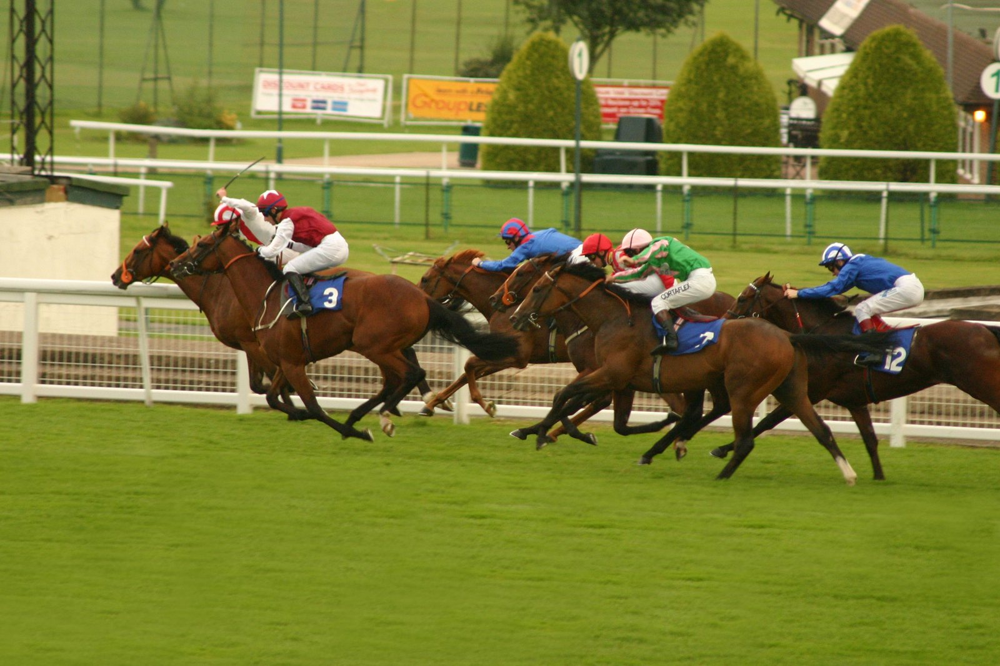

Lovcen busca en el Kikuka Sho la Triple Corona que no gana nadie en Japón desde 2020
Lovcen llega al Kikuka Sho de Kyoto, el próximo domingo 25 de octubre, con los dos primeros tramos de la Triple Corona japonesa en el palmarés y la responsabilidad de intentar algo que en Japón no se consigue desde la hazaña de Contrail en 2020.

El tercer y último tramo se corre sobre 3.000 metros de césped, la distancia más larga que afrontará nunca Lovcen. Hasta ahora venía ganando desde los 2.000 metros del Hopeful Stakes de dos años (G1 de Nakayama) hasta los 2.400 del Tokyo Yushun (Derby japonés) del pasado 26 de mayo, que se llevó por cuello en una monta de Kohei Matsuyama en la que salió lento del cajón trece y acabó rodando por fuera. Antes, el 19 de abril en Nakayama, se había anotado el Satsuki Sho por tres cuartos de cuerpo con el jinete en la silla.
La pregunta no es cuánto corre: es si estira hasta los 3.000. Y ahí el pedigrí le acompaña. Su padre, World Premiere, ganó el Kikuka Sho de 2019 y el Tenno Sho (Primavera) de 2021 sobre 3.200 metros, dos clásicos de fondo. El abuelo, Deep Impact, también firmó el Kikuka Sho en 2005, dentro de su propia Triple Corona. Es, por sangre, un caballo que tiene papeleta de aguantar.
Sugiyama trabajó al colt en Ritto a dos segundos por encima del ritmo con el que preparó el Satsuki Sho y declaró que no hay secuelas de la primavera. La duda, admitida por el propio preparador en Japón, pasa por un invierno largo sin reaparecer: Lovcen no corre desde el Derby de mayo. Matsuyama repetirá en la silla.
En Kyoto le esperarán los mejores tres años japoneses que no estuvieron en Nakayama ni Tokio y los que sí lo intentaron sin éxito. Si cae, lo normal será verlo apuntar al Arima Kinen de diciembre; si gana, se cerrará un año en el que Japón habrá recuperado una Triple Corona que ya pesa demasiado como para seguir cambiando de generación cada temporada.
Por Martín Larrañeta